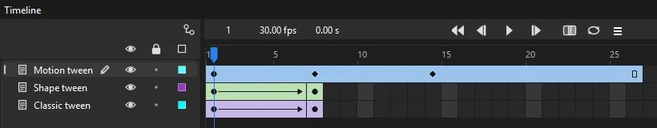
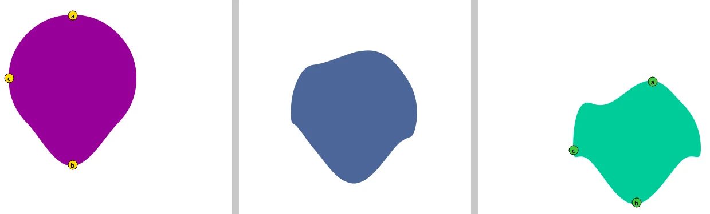
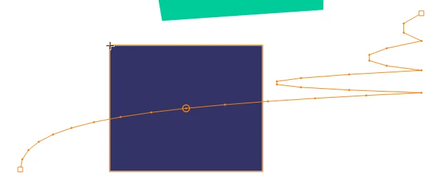
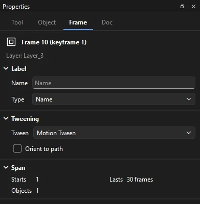
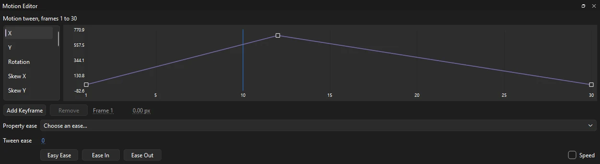

Animation
Tweens and easing
A tween fills in the frames between poses for you. Phoenix has three kinds of tween, each suited to a different job, and several ways to ease them so they start and stop the way real things do.
| Tween | Animates | Use it for |
|---|---|---|
| Classic | Symbol instances, groups, text and bitmaps between two keyframes: position, size, rotation and skew, and for symbol instances the color effect and filters too | Most character and prop animation, and anything on a motion guide |
| Shape | A shape morphing into another shape, with its colors | Blobs, liquids, smoke, simple transformations |
| Motion | One symbol instance or text block along an editable path, with each property on its own curve | Moves you want to shape with a path and curves rather than keyframes |

Classic tweens
- Put an instance of a symbol on a keyframe. To animate a drawing, convert it first with (F8).
- Add a second keyframe later on the same layer (F6) and change the instance there: move it, scale it, rotate it, or change its color effect or filters.
- Right-click a frame between them and choose Classic Tween, or choose . You can also pick Classic Tween from the Tween list in the Frame tab's Tweening section.
The span turns lilac with an arrow running to the next keyframe. The command works on every selected span at once, on any number of layers. To take a tween off again, choose , or No Tween in the Tween list; the keyframes stay as they are.
Tween settings
Click any frame of a classic tween to set its options in the Frame tab's Tweening section:

- Ease
- How the motion speeds up and slows down: a Classic amount from -100 to 100, a preset, or a Custom curve. Edit... opens the curve editor. See Easing.
- Rotate
- Auto turns the shortest way between the two keyframes. Clockwise and Counter Clockwise turn that way and add as many whole extra turns as you type in the x box beside it. None blends the shape of the transform straight, without turning.
- Orient to path
- On a layer guided by a motion guide, turns the object as the path turns.
- Snap, Sync
- Kept with the tween, so files that use them keep them. Phoenix doesn't use them when it plays: an object on a motion guide always lands on the path, and a graphic symbol plays as its instance's looping settings say.
The Span section below shows where the span starts, how long it lasts and how many objects are on it.
What a classic tween animates
- Transform: position, scale, skew and rotation, worked out separately so an object turns and grows smoothly rather than squashing through the middle.
- Color effect and filters of symbol instances: brightness, tint, alpha and advanced color all blend. Filters blend number by number; a filter on only one of the keyframes fades in or out.
- 3D position and rotation of movie clips, set with the 3D Rotation and 3D Translation tools.
- Groups, text and bitmaps tween their transform only.
Raw shapes don't move in a classic tween; morphing them is a shape tween's job. Rectangle and oval primitives hold still too.
When a keyframe has several objects, Phoenix pairs each one with the same symbol on the next keyframe: at the same place in the stacking order first, otherwise wherever that symbol is. When each keyframe has exactly one object of the same kind, they pair even if the symbols differ, so you can swap a symbol at the second keyframe and still tween to it. An object with no partner holds still.
Motion guides
To move an object along a curved path rather than a straight line, draw the path as a stroke on a guide layer above it and put the tweened layer under it. See Motion guides.
When a classic tween won't work
- Nothing happens when you choose Classic Tween
- The span needs a keyframe after it to tween to. Add one with F6 and try again.
- The span is lilac but nothing moves
- The object is a raw shape or a primitive. Select it, convert it to a symbol (F8) on both keyframes, or use a shape tween instead.
- One object moves, another doesn't
- It has no partner on the next keyframe, so it holds still. Keep the same symbol on both keyframes, or put each moving object on a layer of its own.
- The tween runs to the end of the layer and stops
- Phoenix draws the arrow even when the next keyframe is missing, for example after frames were removed at the end. Make sure each tween ends in a keyframe.
- It spins the wrong way
- Set Rotate to Clockwise or Counter Clockwise, or add a keyframe part way round.
Shape tweens
- Draw a shape on a keyframe.
- Add a keyframe later on the same layer and draw, or reshape, the shape it should become. Colors and strokes can change too.
- Right-click a frame between them and choose Shape Tween, or , or pick it from the Frame tab's Tween list.
The span turns green with an arrow. The Ease settings work just as they do for a classic tween.
- Shape tweens work on shapes, merge drawings and drawing objects alike. Symbol instances, groups, text and primitives don't morph; break them apart with (Ctrl+B) first. Both keyframes need a shape, or the command does nothing.
- Only the first shape on each keyframe morphs, so keep one shape per keyframe on a shape tween's layer.
- Outlines pair fill by fill, largest first, and holes with holes; strokes pair by length. An outline or stroke with nothing to pair with grows from a point, or shrinks to one, where it is.
- Fill colors, gradients and stroke colors and widths blend along with the outlines.
Phoenix pairs the outlines itself, so there is no blend choice to make between smooth and sharp-cornered in-betweens. Use shape hints to steer it.
Shape tweens are smoothest between similar shapes. If a morph twists or flips, add shape hints, or an in-between keyframe that guides it. For a big change, morph in two or three steps rather than one.
Shape hints
Shape hints tell a shape tween which point of the first shape becomes which point of the last, so a morph keeps its corners where you want them.
- Put the playhead on the first keyframe of the shape tween and choose (Ctrl+Shift+H). A lettered circle, starting at a, appears in the middle of the shape.
- With the Selection tool, drag the hint onto a point of the shape's outline. Hints on the first keyframe are yellow.
- Go to the tween's end keyframe, where the same letter waits in green, and drag it to where that point should end up.

- You can add up to 26 hints, a to z. Place them in order around the outline, the same way round on both keyframes.
- To remove one, drag it off the stage. removes them all.
- (Ctrl+Alt+H) hides or shows them. They are only drawn on the tween's two keyframes.
- A hint steers outlines that are both closed or both open. Phoenix skips a hint that would fold an outline back over itself, so if a hint seems to do nothing, move it, or the hints on either side of it.
- Hints are saved with the tween in FLA files too, and the morph they shape is saved with it.
Motion tweens
A motion tween belongs to one object rather than to a pair of keyframes. You animate it by moving the playhead and changing the object; Phoenix records each change as a property keyframe and draws the object's path on the stage.
Create a motion tween
- Put a symbol instance or a text block alone on a keyframe. Convert a drawing to a symbol first (F8).
- Click a frame of its span and choose , or right-click the frame and choose Motion Tween.
- Move the playhead later in the span and move, turn or scale the object.
The span turns blue. A span only one frame long at the end of the layer first grows to one second. If the span holds a shape, a group, a bitmap or more than one object, nothing happens.
The tween span
A motion tween's span shows a small diamond at each frame with a property keyframe and a hollow rectangle at its end. It needs no keyframe after it.
- Press F6 inside the span to add a property keyframe for every property at that frame, without changing anything or splitting the span.
- Press F7 inside the span to end the motion there and start a blank keyframe.
- Ctrl-drag the span's last frame to make it longer or shorter, and the whole motion stretches or squeezes to fit, keeping its property keyframes in proportion. Adding or removing frames inside the span does the same.
- Drag a selected span to move it, or hold Alt as you drop to copy it, motion and all.
- takes the motion off. The object stays where the motion started.
Clear Keyframe doesn't remove property keyframes; delete them in the Motion Editor. There is no command to split one motion tween into two or join two into one.
Property keyframes
With the playhead past the start of the span, these changes add or update a property keyframe at that frame:
- Dragging the object with the Selection tool, or nudging it with the arrow keys.
- Scaling, rotating or skewing it with the Free Transform tool (Q) or .
- Typing its position or size in the Properties panel, or aligning it.
- Changing a symbol instance's color effect: brightness, tint, alpha or advanced color.
- Changing the numbers of one of its filters, such as a blur's amount or a shadow's distance. Adding, removing or reordering filters, or changing their colors and switches, applies to the whole span.
On the span's first frame, a change moves or reshapes the object where the motion starts, and the later property keyframes stay where they are.
The motion path
Select an object with a motion tween and its path is drawn on the stage in its layer's color: a dot for each frame, so you can see the spacing, a square at each property keyframe, and a ring at the frame shown.

With the Selection tool:
- Drag a square to move that property keyframe on the stage.
- Drag the path between keyframes to bend it. The path curves through the point where you let go, between the position keyframes on either side. With no later keyframe, Phoenix adds one at the end of the span.
- Drag the first point to move the object where the motion starts, keeping the rest of the path.
- Press Esc during a drag to cancel it. With Shift held, a click adds to the selection and leaves the path alone.
The path is shaped by its keyframes and their curves. To fine-tune how it bends and how fast it travels, edit the X and Y curves in the Motion Editor. A motion tween's path can't be edited with the Subselection tool, moved all at once, or replaced by a stroke you draw. To move an object along a drawn path, use a classic tween on a motion guide.
Orient to path
Click a frame of the motion tween and check Orient to path in the Frame tab's Tweening section, and the object turns as its path turns. Point the object along the start of the path first; it keeps that angle to the path all the way.

Copy and paste motion
- Select an object with a motion tween, or put the playhead in its span, and choose .
- Select another symbol instance or text block, alone on its keyframe, or select its frames, and choose .
The motion starts from where the object already is, and its turns and scaling are added to the object's own. At the end of a layer the span grows to the motion's length; elsewhere the motion stretches to fit the span. Pasting replaces any motion the object had. Both commands are also on the frame right-click menu.
The Motion Editor
Open , which docks beside the Timeline. Select an object with a motion tween, or put the playhead in one, to see each property as a curve over time: X and Y position, rotation, skew and scale. For a symbol instance, the list also has its color effect (alpha, brightness, tint and the advanced color percentages and offsets) and the numbers of each of its filters, such as blur, strength, distance and angle.

Pick a property from the list to edit its curve:
- Click a point to select it and show its handles. Drag a point to change its value or move it to another frame between its neighbors; drag its handles to shape the curve.
- Double-click the curve to add a point there without changing its shape, or use Add Keyframe to add one at the playhead. Select a point and press Delete, or use Remove, to delete it; the first point stays.
- Type exact numbers in the Frame and value fields beside the buttons. Values keep to the same ranges as the Properties panel.
- Property ease eases just this property: pick Linear or Sine, Quad, Cubic, Quart, Quint, Expo, Circ or Back, each as In, Out or In Out. It applies to the stretch after the selected point, or to the whole curve when no point is selected.
- Easy Ease slows the motion into and out of the selected point (every point, with none selected) by flattening its handles a third of the way to the points either side; Ease In and Ease Out do one side only.
- Tick Speed to draw how fast the value changes over the curve, on its own scale: a smooth ease shows as a hill, a sudden start as a cliff.
- Tween ease eases the whole tween, from -100 (ease in) to 100 (ease out). A property that the file marks to ignore the tween's ease keeps its own timing.
The graph always fits the whole span and the curve's range; it doesn't zoom or scroll.
A motion tween in an FLA file can give each property an ease of its own in place of the tween's: an ease in or out (quadratic to quintic, by an amount), a stop and start in the middle, a bounce in, or a custom curve. Phoenix plays them, each property by its own ease, and keeps them when you edit the tween. The Motion Editor draws a property's keyframes without such an ease, so the path on the stage can curve where its X and Y curves look straight.
Select an instance with the Time Remap behavior and the list has Frame shown (Time Remap): the frame of the symbol it shows, over the frames of its keyframe. Shape it like any other curve: ease out of a freeze, speed up into slow motion, or bend a run backwards. Between two points without handles the frame shown runs in a straight line, as when it is keyed in the Behaviors panel; keying a value there afterwards keeps the curve's handles.
3D in motion tweens
A movie clip's motion tween in an FLA file can also turn it about its horizontal and vertical axes (Rotation X and Y) and move it toward or away from you (Z). Phoenix draws it in perspective: turned about its transformation point, seen from in front of the document's vanishing point at the file's perspective angle, as it plays and in every export. An SWF movie gets such a scene as frames of shapes, and an HTML5 page as pictures of its frames.
Phoenix can't key these 3D properties in a motion tween yet, and the Motion Editor has no rows for them. To animate 3D yourself, use a classic tween between movie clips posed with the 3D Rotation and 3D Translation tools.
Motion Sketch
To move an instance the way your hand moves, select it and choose Control > Motion Sketch. Press on the stage and move the pointer: the movie plays from the playhead, and the instance follows where you point until you let go or the movie comes round to the start again. The path is kept as a Recorded Motion behavior with a key a frame for how far it moves across and down. Change those keys in the Behaviors panel, turn the behavior off, or sketch again to replace it; Bake turns it into ordinary keyframes.
Motion tweens and classic tweens compared
| Motion tween | Classic tween | |
|---|---|---|
| Animates | One symbol instance or text block alone on its span | Every symbol instance, group, text block and bitmap on the keyframes, paired up |
| Keys | Property keyframes inside one span, added by changing the object | Ordinary keyframes; each pair makes a separate tween |
| End | Needs no keyframe after it | Needs a keyframe to tween to |
| Path | Drawn on the stage; drag it to bend it | Straight, or along a motion guide you draw |
| Easing | Per property in the Motion Editor, plus a tween ease | One ease for the tween: an amount, a preset or a custom curve |
| Rotation | Keyed as a value, so any number of turns | Auto, None, or clockwise and counterclockwise with extra turns |
| Color and filters | Keyed per channel on their own curves | Blend between the two keyframes |
| Stretching | The whole motion stretches with the span | Each tween stretches with its own span |
| 3D | Plays 3D from FLA files; can't key it yet | Tweens movie clips' 3D poses |
| Reuse | Copy Motion, Paste Motion and motion presets | Copy and paste the frames |
Reverse Frames drops motion tweens from the frames it reverses but keeps classic and shape tweens, flipping their eases and rotation. See Frame commands.
Easing
Easing makes motion feel natural: real objects take time to get going and to stop. Set the Ease on the Frame tab for any classic or shape tween. Motion tweens ease in the Motion Editor.
- Classic eases with a single amount: negative values ease in (start slowly), positive values ease out (end slowly), 0 runs at an even speed.
- Presets come in nine families, Quad, Cubic, Quart, Quint, Sine, Back, Circ, Bounce and Elastic, each in In, Out and In Out forms. Quad to Quint ease harder and harder; Back overshoots and settles; Bounce bounces at the end; Elastic springs.
- Custom lets you draw your own curve. Choosing it opens the curve editor.
A custom curve takes the place of a preset, and a preset takes the place of the classic amount.
Custom ease curves
Click Edit... under Ease, or choose Custom, to open the curve editor. The horizontal axis is time across the tween (Frames); the vertical axis is how far the change has got (Tween). The graph leaves room above and below, so a curve can overshoot and come back.

- Drag the points (squares) and their handles (circles) to shape the curve. The two end points stay put.
- Double-click the curve to add a point there, keeping the curve's shape. Select a point and press Delete to remove it.
- Linear resets it to a straight line.
- Save... stores the curve under a name in the Preset list, for use in any document; Delete removes one.
- Export... and Import... share curves with other people as JSON files.
Easing each property
A classic or shape tween has one ease for everything it animates. FLA files can give a classic tween separate eases for position, rotation, scale, color and filters; Phoenix keeps them in the file but plays the tween with its one ease. To ease properties separately, use a motion tween, where Property ease and the curve handles in the Motion Editor work on one property at a time.
Motion presets
opens a collection of reusable motions, kept with your Phoenix settings so they are there in every document.
- Save Current...
- Saves the selected object's motion tween, or the one under the playhead, as a preset with the name you give it.
- Apply
- Gives the chosen preset to the selected symbol instance or text block, alone on its keyframe. It works like Paste Motion: the motion starts from where the object is. Double-clicking a preset applies it too.
- Import..., Import Folder...
- Brings in motion preset files (
.xml); Import Folder looks through every folder inside the one you pick. Files that hold no motion are listed and skipped. - Export..., Delete
- Saves the chosen preset as a
.xmlmotion file to share, or removes it.
Phoenix comes with no presets of its own; the list fills as you save and import. The .xml preset files are also how to take a motion out of Phoenix as XML: save the tween as a preset, then export it. There is no separate command to copy a motion as XML.
Keying 3D rotation and Z in motion tweens in Phoenix (those of FLA files play; classic tweens carry Phoenix's own 3D).